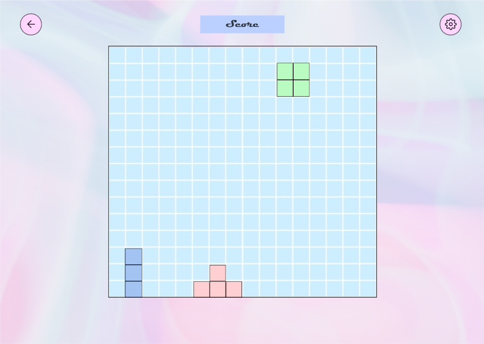
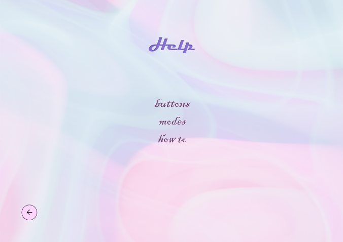
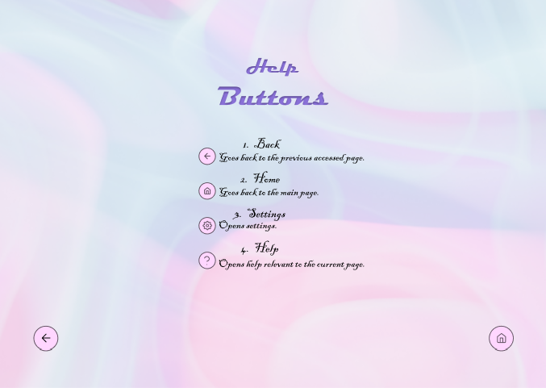

2. Introduction
Since it was created in 1984 by Russian game inventor Alexey Pajitnov, Tetris is a timeless puzzle video game that has captured players' attention. Tetrominos, which are falling blocks made up of various arrangements of four squares, must be manipulated in order to form entire horizontal lines with no gaps. Tetrominos fall faster as the game goes on, forcing players to act quickly and wisely in order to avoid hitting the top of the playing area.
Our new version of Tetris is not very different from the classic version, although it has evolved a lot compared to the first version of the game. It is available both on the mobile phone and on the PC.
An important feature of this game is the diversity of players. The game has been modified so that on both accessible platforms, it can also be played by people with special needs, who face difficulties in finding games suitable for them.
2.1 Document purpose
This document includes all the relevant details on the project's description and creation, including interaction design patterns employed, user flow, affective elements, and emotion.
2.2 Product purpose
This version of the game is designed to be accessible for people with impairments, such as those without arms or those who are color blind, in order to provide inclusive and accessible entertainment alternatives that cater to their specific needs and let them take advantage of gaming.
It provides voice input with commands for total control of the game, customization of the interface, use of buttons for the mobile application.
It has 3 interaction types: using keyboard, voice input, buttons/screen gestures.
2.3 Product details
The project was created respecting all the features and requirements specified in its description. A broad description of the project and as many details as possible can be found by accessing the following link:
https://profs.info.uaic.ro/~busaco/teach/courses/hci/projects/
3. Description
3.1 Functionalities
Our Tetris application is an entertaining and captivating game created to offer users of different skill levels and backgrounds a peaceful and delightful experience. The app seeks to be accessible to a wide range of users, including those who are looking for a break from work, seeking strategic challenges, or overcoming limitations in their mobility, with a focus on simplicity, intuitive controls, and customizable features. Our Tetris app offers a fun gaming experience that can be enjoyed on both PCs and smartphones, whether you're a casual player, puzzle fanatic, or someone with specific accessibility needs.
To better understand the application, we can follow a user flow of a normal user:
- Upon launching the app, the user is presented with the landing page, which prominently displays three big buttons: "Play" and "Settings" and "Help".
- The user taps or clicks on the "Play" button to start a game immediately. This button provides a quick and straightforward way for users to jump into the gameplay without any additional steps.
- After selecting "Play," the app transitions to the game screen, where the Tetris grid and blocks are displayed.
- As the user successfully completes rows, they earn points, and the game progresses to higher levels, increasing the speed and difficulty of the falling blocks.
- If the stack of blocks reaches the top of the grid, the game ends, and the user's final score is displayed.
- If the user wants to customize their gaming experience or adjust specific preferences, they can tap or click on the "Settings" button on the landing page.
- Upon selecting the "Settings" button, the user is taken to the settings menu, where they can configure various aspects of the game, such as choosing the control mode, adjusting the colors or themes, enabling or disabling sound effects.
- After saving the settings, the user is brought back to the landing page, where they can choose to start a new game by selecting the "Play" button or make further adjustments to the settings.
- If it is the first time using the app and he does not know how to use it he can press button "Help".
- In this frame he can learn about buttons, about different game modes and also how to play.
3.2 Users
There are several types of users, so we will expose some user-flows below
- The user, with the assistance of another person, launches the Tetris app on their device.
- The app's landing page appears, displaying two prominent buttons: "Play" and "Settings."
- The helper taps or clicks on the "Settings" button on behalf of the user.
- The app transitions to the settings menu, where various customization options are available. The helper explores the settings menu and locates the control mode options. They select the voice input mode on behalf of the user.
- The app returns to the landing page, displaying the updated settings.
- The user, with the assistance of the helper, provides voice commands to control the game. For example, they say "left" or "right" to move the falling blocks accordingly..
- The user continues to provide voice commands to manipulate the blocks, aiming to complete rows and achieve a high score.
- If the stack of blocks reaches the top of the grid, the game ends, and the user's final score is displayed.
3.3 Design patterns
We will divide the design patterns according to the frame in which they are present
- Gameplay Frame:
- Settings Frame:
Grid Layout: Games like Tetris frequently use the grid layout as a design pattern. It creates a grid-like layout in the playing area so that the player can position and control the falling blocks.
Command Buttons: The settings and back buttons act as command buttons, enabling users to access more features or go back to a previous screen. To make them instantly recognizable and interactive, these buttons often have distinctive visual style. Well-placed and easily accessible command buttons contribute to a positive user experience.
Gaming Controls: The user can interact with the falling bricks and change their places using gaming controls like arrow buttons or swipe gestures.
List View: The settings frame has a list view design pattern to present various options and configurations to the user. Each setting is displayed as an item in the list, allowing the user to select their desired preferences. The list view helps users quickly navigate through settings, enhancing efficiency and reducing potential frustration.
Radio Buttons: Radio buttons are used to represent the available game modes. Radio buttons allow the user to select a single option from a list.
Color Selection: Providing users a set of color options to choose from.
Live Preview: The preview section that displays how the selected color would look in the game aligns with this pattern. Offering a variety of choices can assist users in creating an aesthetically pleasing and engaging experience in the app because colors can have psychological associations and influence mood.
Horizontal Scroll: The horizontal scroll is used to control music and sound.
In addition to design patterns, a good user experience is also provided by the variety of game modes: monochromatic, voice input, buttons input, slow mode. Providing a voice input mode for users with disabilities, such as those without arms, can create feelings of inclusivity, empowerment, and independence. It allows them to overcome physical limitations and participate in the app's activities like any other user. It ia the same for those who are color blind or who does not know how to use a smartphone.
4. Interface
A normal user-flow using the desktop app:
• Landing Page
• Press Start
• Settings
• From Settings->Modes
• From Settings->Customize
• From Modes choosing buttons->Play
• From Main Frame->Help
• From Help->Buttons
• From Help->Modes
• From Help->How to
5. Bibliography
Referințele care au fost folosite pentru crearea acestui document au fost:
• https://w3c.github.io/scholarly-html/
• http://pxdotpt.com/hci
• https://www.figma.com
6. Contributions:
• Enasel Madalina:
- Game interface prototypes
- Personas: 2 Secondary
• Ghioc Iuliana-Otilia :
- Scholarly Documentation
- Game prototypes
- Personas: Primary, and 2 Secondary